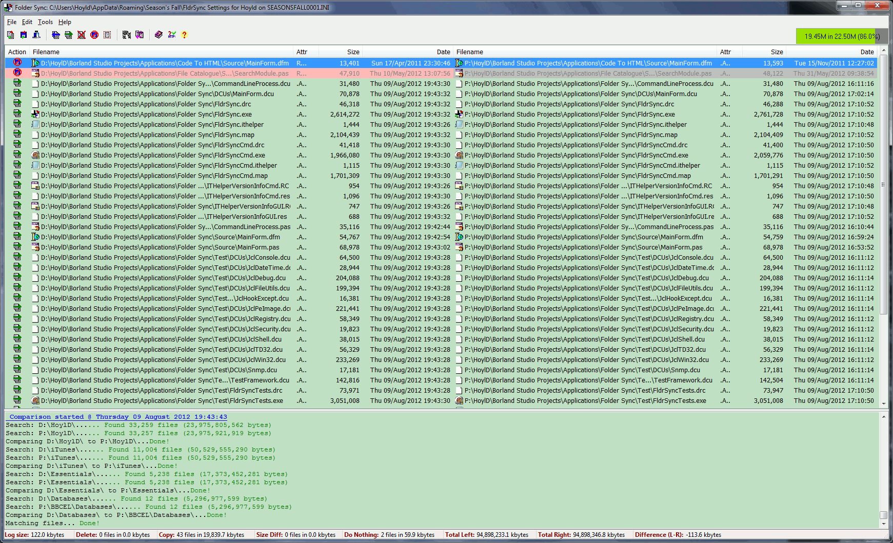

Welcome to the on-line help for the Folder Sync applications (GUI and Command Line).
This application provides a simple to use folder synchronisation tool. The application compares the date and time stamps of files and suggests that and older file should be overwritten with the new file or where a destination file doesn't exist (files with no destinates are shown as a filename and path in gray).

A read only file will not be overwritten with non-read only files.
Some of the files in the resulting file list are colour coded as follows:
This application now supports alternate INI files specified on the command-line as follows (long filename should be enclosed in double quotes):
FldrSync /@[drive:\path\filename.ext]
In this release I've made quite a number of changes, some visually, but most and under the bonnet. Below is a non-exhaustive list of those changes:
The help for the Folder Sync is broken down into the following sections: